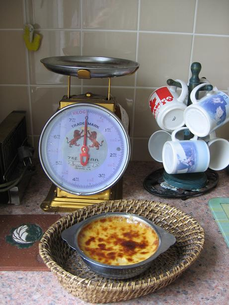

Oeufs au lait à la chicorée et au
caramel de beurre salé. 
Ingrédients :
pour 4 personnes
- 4 gros oeufs
- 2/3 de litre de lait
- 1 cuiller à café d'essence de vanille
- 1 cuiller à soupe d'extrait de chicorée
- 2 cuillers à soupe de beurre salé
- 70 grammes de sucre en morceaux (pour le caramel)
- 100 grammes de sucre en poudre (pour le lait)
Préparation :
Préchauffer le four à 150°C
thermostat 5).
Mélanger le sucre pour le lait au lait et
mettre à chauffer à feu doux.
Battre les oeufs comme pour une omelette, les
mélanger au lait chaud sucré.
Faire caraméliser le sucre en morceaux dans
une casserole avec 2 cuillers à soupe d'eau, en remuant sans
cesse à la spatule de bois ; quand le caramel est blond, y
mettre le beurre salé et rémuer jusqu'à dilution
complète du beurre ; hors du feu, ajouter la chicorée et
remuer pour bien homogénéiser ; verser le caramel dans le
plat de cuisson pour le four et en napper le fond et les bords.
Mettre ce plat dans un bain-marie et enfourner le
tout ; laisser cuire 45 minutes.
Servir assez longtemps avant consommation (se mange
froid ou tiède, jamais chaud)..
Observations :